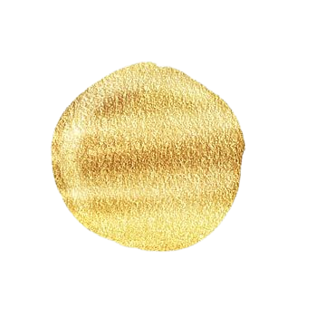

Let's explore the
temples of Chhattisgarh
Jyotirlinga of Lord Shiva:Srisailam is home to one of the twelve Jyotirlingas, which are considered the most sacred abodes
of Lord Shiva.Devotees believe that visiting these Jyotirlingas grant them moksha..
Shakti Peetha of Goddess Parvati:The temple is one of the eighteen Shakti Peethas.It is believed that the neck of Goddess Sati (an incarnation of Parvati) fell here, and thus the site holds immense significance for devotees seeking the blessings of the Goddess.
Dravidian Style: The temple follows the Dravidian style of architecture, characterized by its pyramid-shaped towers (gopurams), intricate carvings, and expansive courtyards.
Gopurams: The temple has several gopurams (entrance towers), with the main gopuram standing tall and majestic. These towers are decorated with detailed sculptures depicting scenes from Hindu mythology.
Prasadam Distribution: Prasadam has been offered to the deities and is then distributed to devotees.
It is considered blessed and spiritually purifying.
During festivals and special occasions, the variety and quantity of prasadam items increase. These offerings
are prepared with great care and devotion in the temple kitchens.